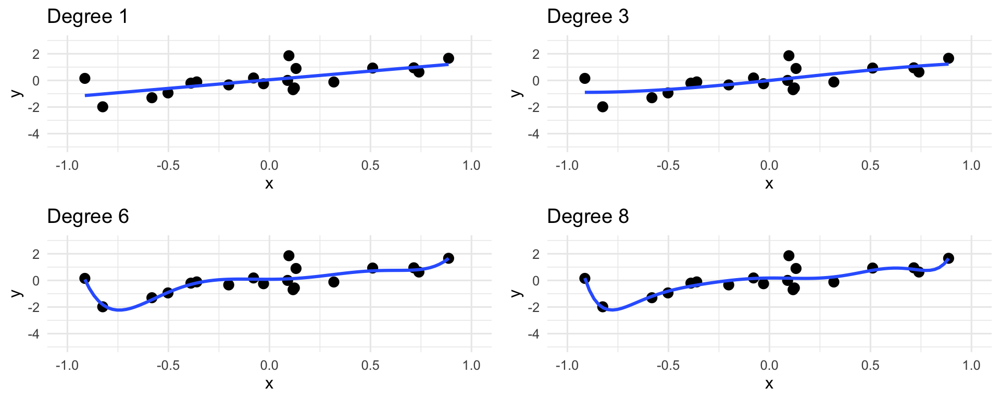

PSTAT 100: Lecture 15
Regression, Part II
Department of Statistics and Applied Probability; UCSB
Summer Session A, 2025
\[ \newcommand\R{\mathbb{R}} \newcommand{\N}{\mathbb{N}} \newcommand{\E}{\mathbb{E}} \newcommand{\Prob}{\mathbb{P}} \newcommand{\F}{\mathcal{F}} \newcommand{\1}{1\!\!1} \newcommand{\comp}[1]{#1^{\complement}} \newcommand{\Var}{\mathrm{Var}} \newcommand{\SD}{\mathrm{SD}} \newcommand{\vect}[1]{\vec{\boldsymbol{#1}}} \newcommand{\tvect}[1]{\vec{\boldsymbol{#1}}^{\mathsf{T}}} \newcommand{\hvect}[1]{\widehat{\boldsymbol{#1}}} \newcommand{\mat}[1]{\mathbf{#1}} \newcommand{\tmat}[1]{\mathbf{#1}^{\mathsf{T}}} \newcommand{\Cov}{\mathrm{Cov}} \DeclareMathOperator*{\argmin}{\mathrm{arg} \ \min} \newcommand{\iid}{\stackrel{\mathrm{i.i.d.}}{\sim}} \]
Recap
SLR Model
y = β0 + β1 x + noise
Simple: only one covariate
Linear: we assume the signal function is linear in the parameters
Regression: numerical response.
In terms of individual observations:
yi = β0 + β1 xi + εi
Recap
OLS Fits: Another View
\[ \frac{\sum_{i=1}^{n} e_i^2}{n} =: \frac{\mathrm{RSS}}{2}\]
- Residual Sum of Squares divided by n is, in essence, the “average distance the points to a line”
- The OLS (Ordinary Least Squares) estimates are the slope and intercept of the line that is “closest,” in terms of minimizing RSS, to the data.
SLR
Parameter Interpretations
- Here is how we interpret the parameter estimates:
- Intercept: at a covariate value of zero, we expect the response value to be […]
- Slope: a one-unit change in the value of the covariate corresponds to a predicted […] unit change in the average response
- Keep in mind: in some cases, trying to interpret the intercept may run the risk of running extrapolation.
- Essentially, if you are going to interpret the intercept, check to make sure that the range of observed covariate values either covers zero or is close to a neighborhood of zero.
Multiple Linear Regression
Multiple Linear Regression
MLR Model
y = β0 + β1 x1 + … + βp xp + noise
Multiple: multiple (p) covariates
Linear: we assume the signal function is linear in the parameters
Regression: numerical response.
In terms of individual observations:
yi = β0 + β1 xi,1 + … + βp xi,p + εi
- Again, assume zero-mean and homoskedastic noise.
Multiple Linear Regression
MLR Model; Matrix Form
\[\begin{align*} \begin{pmatrix} y_1 \\ \vdots \\ y_n \end{pmatrix} & = \begin{pmatrix} 1 & x_{11} & \cdots & x_{1p} \\ 1 & x_{21} & \cdots & x_{2p} \\ \vdots & \vdots & \ddots & \vdots \\ 1 & x_{n1} & \cdots & x_{np} \\ \end{pmatrix} \begin{pmatrix} \beta_0 \\ \beta_1 \\ \vdots \\ \beta_p \\ \end{pmatrix} + \begin{pmatrix} \varepsilon_1 \\ \vdots \\ \varepsilon_n \end{pmatrix} \end{align*}\]
- In more succinct terms: \(\vect{y} = \mat{X} \vect{\beta} + \vect{\varepsilon}\)
- Notice the initial columns of 1s in the data matrix \(\mat{X}\); this is necessary in order to include an intercept in the model.
- Under L2 loss, the empirical risk becomes \(R(\vect{b}) = \| \vect{y} - \mat{X} \vect{b} \|^2\)
Multiple Linear Regression
MLR Model; OLS Estimates
Taking appropriate derivatives and setting equal to zero yields the multivariate analog of the normal equations, which the OLS estimator must satisfy: \[ \tmat{X} \mat{X} \hvect{\beta} = \tmat{X} \vect{y} \]
Assuming \((\tmat{X} \mat{X})\) is nonsingular, this yields \[ \boxed{\hvect{\beta} = (\tmat{X} \mat{X})^{-1} \tmat{X} \vect{y} } \]
This is rarely used directly; in practice, we continue relying on the
lm()function inR.
Multiple Linear Regression
Comparisons
Multiple Linear Regression
The Geometry of MLR
- Given our OLS estimates, we see that the fitted values are obtained using \[ \hvect{y} = [\mat{X} (\tmat{X} \mat{X})^{-1} \tmat{X}] \vect{y} =: \mat{H} \vect{y}\] where the matrix \(\mat{H} := [\mat{X} (\tmat{X} \mat{X})^{-1} \tmat{X}]\) is called the hat matrix.
Fact
The hat matrix is an orthogonal projection matrix.
- Recall that an orthogonal projection matrix is one that is symmetric and idempotent.
Multiple Linear Regression
The Geometry of MLR
Symmetric: \[\begin{align*} \tmat{H} & = [\mat{X} (\tmat{X} \mat{X})^{-1} \tmat{X}]^{\mathsf{T}} \\ & = \mat{X} (\tmat{X} \mat{X})^{-1} \tmat{X} = \mat{H} \end{align*}\]
Idempotent: \[\begin{align*} \mat{H}^2 & = [\mat{X} (\tmat{X} \mat{X})^{-1} \tmat{X}] [\mat{X} (\tmat{X} \mat{X})^{-1} \tmat{X}] \\ & = \mat{X} (\tmat{X} \mat{X})^{-1} \tmat{X} = \mat{H} \end{align*}\]
- So, our fitted values are obtained by taking the orthogonal projection of our observed response values onto the column space of our data matrix.
Multiple Linear Regression
The Linear Algebra
The hat matrix is given its name because it “puts a hat on y”: that is, our fitted values are obtained as \(\hvect{y} = \mat{H} \vect{y}\).
Given that our residuals are \(\vect{e} := \vect{y} - \hvect{y}\), we see that \(\vect{e} = (\mat{I} - \mat{H}) \vect{y}\).
by_hand from_lm
1 4.040318 4.040318
2 6.380321 6.380321
3 4.124301 4.124301
4 6.207154 6.207154
5 3.084229 3.084229
6 4.432515 4.432515
7 3.477818 3.477818
8 4.695695 4.695695
9 5.688262 5.688262
10 4.384729 4.384729
11 4.968997 4.968997
12 5.068233 5.068233
13 3.884491 3.884491
14 3.474971 3.474971
15 4.401341 4.401341
16 4.849116 4.849116
17 5.679832 5.679832
18 4.711425 4.711425
19 3.839669 3.839669
20 7.923572 7.923572
21 3.563379 3.563379
22 5.648616 5.648616
23 4.185999 4.185999
24 5.643525 5.643525
25 2.448416 2.448416
26 3.860309 3.860309
27 3.977203 3.977203
28 6.022848 6.022848
29 3.505132 3.505132
30 5.205171 5.205171
31 4.177154 4.177154
32 4.733085 4.733085
33 5.440227 5.440227
34 4.116223 4.116223
35 5.891783 5.891783
36 5.105471 5.105471
37 4.645310 4.645310
38 5.486534 5.486534
39 5.280497 5.280497
40 5.804265 5.804265
41 4.182042 4.182042
42 3.031127 3.031127
43 3.880124 3.880124
44 5.842735 5.842735
45 3.272550 3.272550
46 4.176729 4.176729
47 3.998192 3.998192
48 4.871284 4.871284
49 5.229715 5.229715
50 3.795282 3.795282
51 5.665758 5.665758
52 5.646263 5.646263
53 4.797967 4.797967
54 5.776258 5.776258
55 3.705044 3.705044
56 4.885695 4.885695
57 3.782006 3.782006
58 5.647595 5.647595
59 5.816222 5.816222
60 4.397215 4.397215
61 4.283715 4.283715
62 4.745622 4.745622
63 4.292431 4.292431
64 7.123134 7.123134
65 4.798616 4.798616
66 3.573439 3.573439
67 4.787930 4.787930
68 4.027349 4.027349
69 4.912255 4.912255
70 5.649646 5.649646
71 5.710368 5.710368
72 4.340650 4.340650
73 3.943549 3.943549
74 5.999067 5.999067
75 3.470007 3.470007
76 2.344029 2.344029
77 4.510278 4.510278
78 4.437223 4.437223
79 6.772731 6.772731
80 6.053983 6.053983
81 3.785832 3.785832
82 5.375079 5.375079
83 4.089310 4.089310
84 2.998463 2.998463
85 5.846056 5.846056
86 5.451119 5.451119
87 4.731775 4.731775
88 4.841022 4.841022
89 4.441388 4.441388
90 3.928632 3.928632
91 4.125261 4.125261
92 5.243104 5.243104
93 5.315892 5.315892
94 3.742497 3.742497
95 6.620963 6.620963
96 5.617741 5.617741
97 6.075043 6.075043
98 5.142180 5.142180
99 2.775360 2.775360
100 4.715389 4.715389 by_hand from_lm
1 -0.062627457 -0.062627457
2 0.073411320 0.073411320
3 0.685145691 0.685145691
4 0.713917034 0.713917034
5 0.505468893 0.505468893
6 -1.195137591 -1.195137591
7 -0.795007966 -0.795007966
8 -1.204929836 -1.204929836
9 -2.561553911 -2.561553911
10 0.306539581 0.306539581
11 1.275348359 1.275348359
12 0.733156085 0.733156085
13 -1.537142708 -1.537142708
14 -1.399453469 -1.399453469
15 -1.924944934 -1.924944934
16 1.260326240 1.260326240
17 0.018520748 0.018520748
18 -1.106679117 -1.106679117
19 0.828982577 0.828982577
20 0.100784189 0.100784189
21 -1.760869831 -1.760869831
22 0.045534806 0.045534806
23 -0.204279782 -0.204279782
24 0.229412480 0.229412480
25 -0.063490090 -0.063490090
26 -0.785021399 -0.785021399
27 0.579916913 0.579916913
28 -0.898124501 -0.898124501
29 1.258190949 1.258190949
30 -0.533555251 -0.533555251
31 0.292802193 0.292802193
32 0.183558321 0.183558321
33 -0.074719085 -0.074719085
34 -1.762702147 -1.762702147
35 0.146019317 0.146019317
36 -0.433069216 -0.433069216
37 -0.470607349 -0.470607349
38 0.950965688 0.950965688
39 0.576699786 0.576699786
40 0.302730598 0.302730598
41 -0.856116521 -0.856116521
42 1.779052713 1.779052713
43 -1.459926174 -1.459926174
44 -1.448534258 -1.448534258
45 0.033874347 0.033874347
46 2.241808295 2.241808295
47 -0.463124192 -0.463124192
48 -1.542814276 -1.542814276
49 -0.310729200 -0.310729200
50 2.715476526 2.715476526
51 -0.408667491 -0.408667491
52 0.157350452 0.157350452
53 -0.305477085 -0.305477085
54 0.584286711 0.584286711
55 0.902957575 0.902957575
56 -0.656448463 -0.656448463
57 -1.879294113 -1.879294113
58 1.698494174 1.698494174
59 -1.279153834 -1.279153834
60 -0.397510507 -0.397510507
61 0.137274543 0.137274543
62 0.430611958 0.430611958
63 -1.268928505 -1.268928505
64 0.372093252 0.372093252
65 0.862869647 0.862869647
66 0.300174183 0.300174183
67 0.722174151 0.722174151
68 -1.148660158 -1.148660158
69 -0.072055921 -0.072055921
70 1.370191934 1.370191934
71 0.680224238 0.680224238
72 0.527326046 0.527326046
73 1.105295223 1.105295223
74 -0.490120484 -0.490120484
75 0.743019964 0.743019964
76 -1.519265227 -1.519265227
77 -0.080004565 -0.080004565
78 -0.006279664 -0.006279664
79 0.902403650 0.902403650
80 -1.798444816 -1.798444816
81 0.639526945 0.639526945
82 0.606506512 0.606506512
83 1.474127291 1.474127291
84 1.054126458 1.054126458
85 0.786122691 0.786122691
86 0.407896806 0.407896806
87 0.590169055 0.590169055
88 -0.240626745 -0.240626745
89 0.138998779 0.138998779
90 0.146554453 0.146554453
91 0.790109889 0.790109889
92 -0.881657724 -0.881657724
93 -0.022960247 -0.022960247
94 0.384699538 0.384699538
95 -0.450056205 -0.450056205
96 -0.723186058 -0.723186058
97 0.866049601 0.866049601
98 1.800552838 1.800552838
99 0.521151147 0.521151147
100 -1.057025279 -1.057025279Multiple Linear Regression
Inference
In order to perform inference, we do need to impose a distributional assumption on our noise.
Using random vectors (remember these from HW01?), we can succinctly express our noise assumptions as \[ \vect{\varepsilon} \sim \boldsymbol{\mathcal{N}_n}\left( \vect{0}, \ \sigma^2 \mat{I}_n \right) \] where \(\boldsymbol{\mathcal{N}_p}\) denotes the multivariate normal distribution (MVN).
On Homework 1, you (effectively) showed that this is equivalent to asserting \[ \varepsilon_i \stackrel{\mathrm{i.i.d.}}{\sim} \mathcal{N}(0, \sigma^2) \]
The Multivariate Normal Distribution
Definition: Multivariate Normal Distribution
A random vector \(\vect{X}\) is said to follow an n-dimensional multivariate normal (MVN) distribution with parameters \(\vect{\mu}\) and \(\mat{\Sigma}\), notated \(\vect{X} \sim \boldsymbol{\mathcal{N}_k}(\vect{\mu}, \mat{\Sigma})\), if the joint density of \(\vect{X}\) is given by \[ f_{\vect{X}}(\vect{x}) = (2 \pi)^{k/2} \cdot (|\mat{\Sigma}|)^{-1/2} \cdot \exp\left\{ - \frac{1}{2} (\vect{x} - \vect{\mu})^{\mathsf{T}} \mat{\Sigma}^{-1} (\vect{x} - \vect{\mu}) \right\} \]
One can show that if \(\vect{X} \sim \boldsymbol{\mathcal{N}_k}(\vect{\mu}, \mat{\Sigma})\), then \[ \E[\vect{X}] = \vect{\mu}; \qquad \Var(\vect{X}) = \mat{\Sigma} \]
Multiple Linear Regression
Inference
We can compute the variance-covariance matrix of the OLS estimators relatively easily.
One property: \(\mathrm{Var}(\mat{A} \vect{x}) = \mat{A} \Var(\vect{x}) \tmat{A}\) .
\[\begin{align*} \Var( \hvect{B}) & = \Var((\tmat{X} \mat{X})^{-1} \tmat{X} \vect{Y} ) \\ & = (\tmat{X} \mat{X})^{-1} \tmat{X} \Var(\vect{Y}) [(\tmat{X} \mat{X})^{-1} \tmat{X}]^{\mathsf{T}} \\ & = (\tmat{X} \mat{X})^{-1} \tmat{X} [\sigma^2 \mat{I}] \mat{X} (\tmat{X} \mat{X})^{-1} \\ & = \sigma^2 (\tmat{X} \mat{X})^{-1} \end{align*}\]
- An unbiased estimator for \(\sigma^2\) is \(\widehat{\sigma}^2 := \mathrm{RSS} / (n - p)\)
Multiple Linear Regression
Inference
Call:
lm(formula = y ~ x1 + x2)
Residuals:
Min 1Q Median 3Q Max
-2.5615 -0.6731 0.1190 0.6815 2.7155
Coefficients:
Estimate Std. Error t value Pr(>|t|)
(Intercept) 1.2201 0.4002 3.049 0.00296 **
x1 0.5735 0.1003 5.718 1.19e-07 ***
x2 1.1654 0.1286 9.063 1.41e-14 ***
---
Signif. codes: 0 '***' 0.001 '**' 0.01 '*' 0.05 '.' 0.1 ' ' 1
Residual standard error: 1.009 on 97 degrees of freedom
Multiple R-squared: 0.5143, Adjusted R-squared: 0.5043
F-statistic: 51.36 on 2 and 97 DF, p-value: 6.152e-16Residuals Plots
MLR is where residuals plots, in my opinion, truly shine.
First note: for data with two covariates and one response, we need three axes to display the full data.
- For data with more than two covariates, it becomes impossible to visualize the raw data directly.
Residuals plots are always two-dimensional scatterplots, regardless of the dimensionality of our data matrix.
Their interpretation in the MLR case is exactly the same as in the SLR case; no trend and homosekdasticity in a residuals plot implies a good choice of model, whereas the presence of trend of heteroskedasticity implies that the initial model may need to be modified.
Multicollinearity
When it comes to MLR, there is a very important phenomenon to be aware of.
Recall that, assuming \((\tmat{X} \mat{X})\) is invertible, then the OLS estimates are given by \(\hvect{\beta} = (\tmat{X} \mat{X})^{-1} \tmat{X} \vect{y}\).
Letting σ2 := Var(εi), further recall that the variance-covariance matrix of the OLS estimators is given by \[ \Var(\widehat{\boldsymbol{B}}) = \sigma^2 (\tmat{X} \mat{X})^{-1} \]
So, what happens if \((\tmat{X} \mat{X})\) is singular - or, equivalently, if \(\mat{X}\) is rank deficient?
Multicollinearity
Well, for one, the OLS estimators become nonunique.
Additionally, the variances of the OLS estimators become infinite, leading to highly unstable estimates.
All of this to say: it is very bad if the data matrix is rank deficient.
- Saying that the data matrix is rank deficient is equivalent to asserting that at least one of the columns in \(\mat{X}\) can be expressed as a linear combination of the other columns.
- Such a situation is called multicollinearity and, again, should be avoided at all costs.
There’s a fairly nice geometric interpretation of multicollinearity as well.
Multicollinearity
Imagine we have a response
ythat has a strong linear association with a covariatex1, and thatyalso has a strong linear association with another covariatex2.- Further suppose
x1andx2have a strong linear association as well.
- Further suppose
Imagining a plot of our data in three-space (
yon the z-axis andx1andx2on the x- and y-axes), the data cloud would look like a pencil - very cylindrical, and very thin.OLS estimation seeks to fit the “best” plane (since z = a + b x + c y prescribes a plane in ℝ3) to this data.
- But, is there really a single best plane that fits this data?
- Not really - there are an infinite number of them!
Multicollinearity
Extreme Case
Multicollinearity
- Here’s another explanation: suppose we are trying to predict a person’s weight from their height.
- Our response variable
ywould beheightand the covariatexmight beweightas measured inlbs.
- Our response variable
- Suppose we augment our data matrix with an additional column: the individual’s heights as measured in kilograms.
- The data matrix would now be rank-deficient, as there is a one-to-one correspondence between weights in lbs and weights in kgs.
- Intuitively: we aren’t really gaining a new variable by incorporating the weights in kgs - we still only have one variable, so including both the lbs and kg weights is a bit nonsensical.
Multicollinearity
There are a few different tools for detecting and combating multicollinearity.
- We won’t discuss many of these; you’ll learn about some of them in PSTAT 126/127.
For the purposes of PSTAT 100, if the number of variables is relatively small, you should construct a correlation matrix of the covariates - for any pair covariates that are highly correlated, remove one from the model.
In
R, thecor()function can be used to produce a correlation matrix.
Caution
Remember to only look for covariates that are correlated with other covariates; do not remove covariates that are highly correlated with the response.
Palmerpenguins
Finally, as an example of another way in which multicollinearity can throw a wrench into things, let’s return to the Palmer Penguins dataset from yesterday.
Consider using bill length as our response, and using body mass and flipper length as two covariates.
Let’s look at regressions of bill length onto these two covariates separately, and then examine a model which uses both covariates simultaneously.
Palmerpenguins
Call:
lm(formula = bill_length_mm ~ body_mass_g, data = penguins)
Residuals:
Min 1Q Median 3Q Max
-10.1251 -3.0434 -0.8089 2.0711 16.1109
Coefficients:
Estimate Std. Error t value Pr(>|t|)
(Intercept) 2.690e+01 1.269e+00 21.19 <2e-16 ***
body_mass_g 4.051e-03 2.967e-04 13.65 <2e-16 ***
---
Signif. codes: 0 '***' 0.001 '**' 0.01 '*' 0.05 '.' 0.1 ' ' 1
Residual standard error: 4.394 on 340 degrees of freedom
(2 observations deleted due to missingness)
Multiple R-squared: 0.3542, Adjusted R-squared: 0.3523
F-statistic: 186.4 on 1 and 340 DF, p-value: < 2.2e-16
Call:
lm(formula = bill_length_mm ~ flipper_length_mm, data = penguins)
Residuals:
Min 1Q Median 3Q Max
-8.5792 -2.6715 -0.5721 2.0148 19.1518
Coefficients:
Estimate Std. Error t value Pr(>|t|)
(Intercept) -7.26487 3.20016 -2.27 0.0238 *
flipper_length_mm 0.25477 0.01589 16.03 <2e-16 ***
---
Signif. codes: 0 '***' 0.001 '**' 0.01 '*' 0.05 '.' 0.1 ' ' 1
Residual standard error: 4.126 on 340 degrees of freedom
(2 observations deleted due to missingness)
Multiple R-squared: 0.4306, Adjusted R-squared: 0.4289
F-statistic: 257.1 on 1 and 340 DF, p-value: < 2.2e-16
Call:
lm(formula = bill_length_mm ~ body_mass_g + flipper_length_mm,
data = penguins)
Residuals:
Min 1Q Median 3Q Max
-8.8064 -2.5898 -0.7053 1.9911 18.8288
Coefficients:
Estimate Std. Error t value Pr(>|t|)
(Intercept) -3.4366939 4.5805532 -0.750 0.454
body_mass_g 0.0006622 0.0005672 1.168 0.244
flipper_length_mm 0.2218655 0.0323484 6.859 3.31e-11 ***
---
Signif. codes: 0 '***' 0.001 '**' 0.01 '*' 0.05 '.' 0.1 ' ' 1
Residual standard error: 4.124 on 339 degrees of freedom
(2 observations deleted due to missingness)
Multiple R-squared: 0.4329, Adjusted R-squared: 0.4295
F-statistic: 129.4 on 2 and 339 DF, p-value: < 2.2e-16 Palmerpenguins
When we regress on body mass and flipper length separately, we notice that the p-values tell us that there exists a significant linear relationship.
However, when we include both covariates in the same model, it appears as though the significance of the body mass coefficient is lost.
This is because of - you guessed it - Multicollinearity!
- Body mass and flipper length are themselves highly correlated; hence, including them both in the same model leads to multicolinearity.
Palmerpenguins
Multicollinearity
Absence Of
Polynomial Regression
I’d like to close out with something we’ve actually alluded to before - polynomial regression.
Admittedly, this is a bit of a misnomer - what we mean by “polynomial regression” is fitting a polynomial to a dataset with one response and one predictor.
yi = β0 + β1 xi + β1 xi2 + … + βp xip + εi
- Note that this can be viewed as a special case of the MLR model - as such, polynomial regression is actually a linear model.
- The “linearity” of a model refers only to how the parameters appear - even in polynomial regression, we don’t have any polynomial coefficients.
Polynomial Regression
In R
- For example:
set.seed(100) ## for reproducibility
x <- rnorm(100) ## simulate the covariate
y <- 0.25 + 0.5 * x^2 + rnorm(100)
lm(y ~ poly(x, 2)) %>% summary()
Call:
lm(formula = y ~ poly(x, 2))
Residuals:
Min 1Q Median 3Q Max
-2.0511 -0.4242 -0.1232 0.5291 1.8763
Coefficients:
Estimate Std. Error t value Pr(>|t|)
(Intercept) 0.77686 0.07897 9.837 3.01e-16 ***
poly(x, 2)1 -0.18241 0.78969 -0.231 0.818
poly(x, 2)2 8.25328 0.78969 10.451 < 2e-16 ***
---
Signif. codes: 0 '***' 0.001 '**' 0.01 '*' 0.05 '.' 0.1 ' ' 1
Residual standard error: 0.7897 on 97 degrees of freedom
Multiple R-squared: 0.5298, Adjusted R-squared: 0.5201
F-statistic: 54.64 on 2 and 97 DF, p-value: < 2.2e-16Polynomial Regression
Caution
- Be careful with polynomial regression - it’s easy to go overboard with the degree of the polynomial!

Polynomial Regression
Caution
In the limit, we can think of the “connect-the-dots” estimator, which estimates the trend as a curve that passes through every single point in the dataset.
This is a bad estimate, because it completely ignores the noise in the model!
The phenomenon of an estimator “trusting the data too much” (at the cost of ignoring the noise) is called overfitting.
There isn’t really a single agreed-upon cutoff for what degree in polynomial regression corresponds to overfitting - it’s a bit context-dependent.
- You’ll likely talk more about this in both PSTAT 126 and PSTAT 131/231.
Next Time
On Monday, we’ll extend our regression framework to include categorical covariates.
In lab today, you’ll get some more practice with regression in
R.- Specifically, you’ll work through a sort of mini-project involving multiple linear regression
- You’ll also get some practice with simulated multicollinearity
Reminder: Homework 2 is due THIS SUNDAY (July 20) by 11:59pm on Gradescope!
- Please do not forget to submit!
Information about ICA02 will be posted in the coming days.
Please Note: I need to move my Office Hours tomorrow (Friday July 18) to 10:30 am - 11:30 am, still over Zoom.

PSTAT 100 - Data Science: Concepts and Analysis, Summer 2025 with Ethan P. Marzban